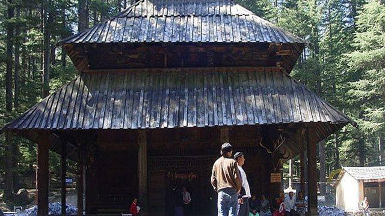
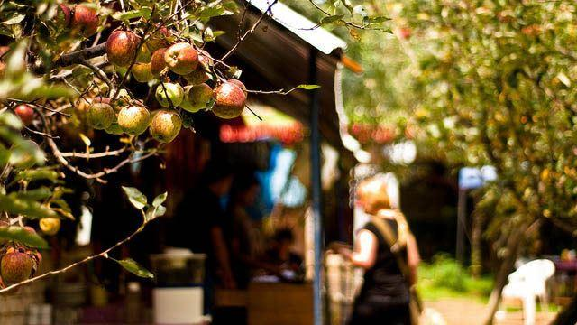
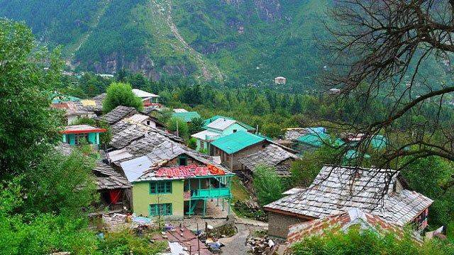
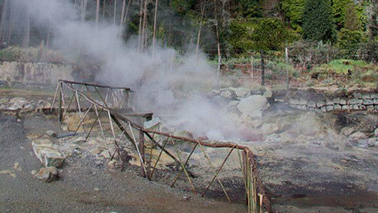
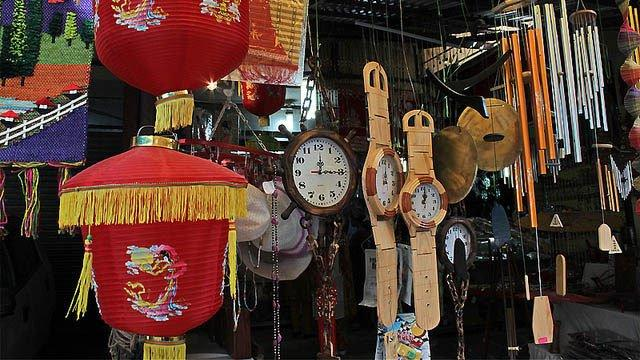
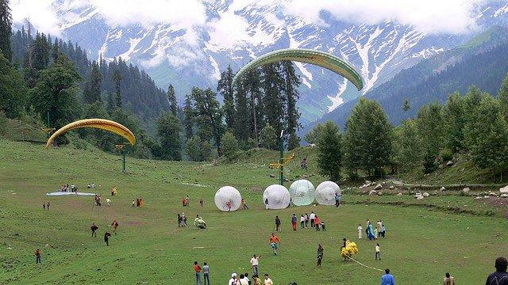
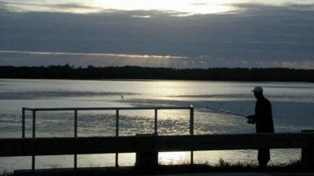
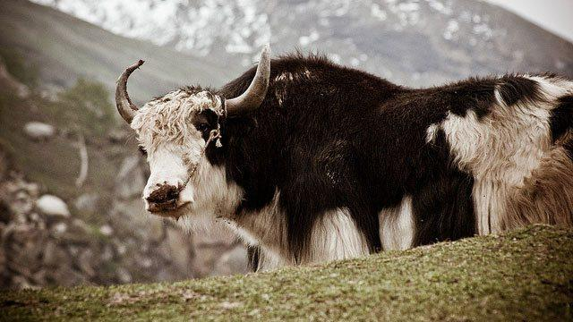
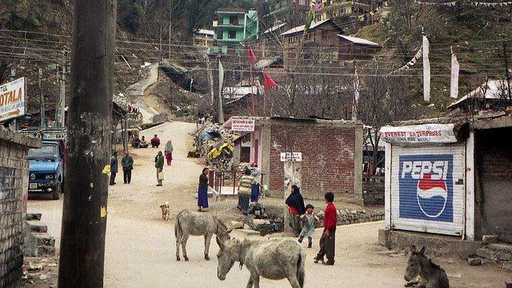

Things To Do
Planning A Trip To Manali? Here's the most fun things to do in Manali.
Manali is a popular hillstation nestled in the ranges of Himachal Pradesh. At 6,398 feet, it enjoys cool weather all year round except winter when it becomes positively cold. Temperatures range from 0 degrees C to 25 degrees C. The best time to visit Manali is between May and October. It's tough to run out of fun things to do in Manali as it has cultivated itself as a major tourist town since many years now.
Visit Temples And Monasteries

Among the many things to do in Manali, visiting the temples and Tibetan monasteries has a unique appeal of its own. The Gadhan Thekchoking Gompa situated near the Mall, is a monastery renowned for wonderful Tibetan handicrafts and carpets that are woven and sold there. The Himalayan Nyingamapa Gompa, near the market place, has a huge statue of Sakyamuni (Lord Buddha) presiding over the monastery. Just west lies the more traditional Panden Ngari Gompa with a beautiful prayer room with idols of Buddhist deities.
For the history buffs, there are three major temples in Manali. The Manu Rishi Temple is another beautiful shrine located 3 km away from Manali. The Vashishtha Temple built around 400 years ago is another temple that is dedicated to a sage. The most popular temple in Manali however, is the Hadimba Temple located in Dhungri. The temple houses the idol of the Goddess Hadimba erected on a rock. It is believed that she used to meditate sitting on it. This temple was built in 1553 AD and is constructed in pagoda style.
Chill At An Apple Orchard

Himachal is literally bursting at the seams with fruit orchards that produce huge amounts of apples, pears, plums and apricots. Fresh fruits, jams, preserves and pickles are sold in large quantities. Some fruit is fermented locally and made into apple cider and fruit wines which are definitely worth a shot!
Experience The Yesteryears Charm At Old Manali

Old Manali is located only 3 km away from Manali and is very famous for its sweet scenting fruit orchards and ancient stone guesthouses. It is home to the coolest cafes, bars and restaurants in Manali, that are filled mostly with ex-pats and a small population of arty Indians who call this area of Manali home! You must explore the ruined fort of Manaligarh here.
Soak Yourself In A Hot Spring

A small village 3 km from Manali is home to natural healing hot water springs and sulphur springs. The village lies across the Beas and is called Vashist. Contemporary bathhouses have been installed, coupled with showers. These fixings have the hot water piped in for visitors' comfort who come here to benefit from the medicinal properties of the natural spring waters.

The Mall is the main shopping area in Manali. You'll find locally made shawls, rugs, caps, footwear, imported goods, and a range of Tibetan handicraft items sold here. The Mall area is a busy commercial street with restaurants and hotels spilling over with tourists in the peak season. You can sample and buy fresh fruit jams, preserves and pickles from the market and take them back as souvenirs. Be prepared to put your best bargaining act forward because every shop here will over quote, and its upto you to bring prices down!
Indulge The Adventure Sport Freak In You

There are ample opportunities for adventure sports around Manali. The Mountaineering Institute in Manali is supported by the Himachal Pradesh Tourism and organises courses in skiing, rock climbing and mountaineering.
The treks in and around Manali can be tough, so be sure to take a well-trained guide along. Among the most popular trekking trails in the region is the "Manali-Chandra Tal-Keylong" route. It is a 120 kilometer trek which takes you to the pristine blue lake of Chandra Tal.
The swift flowing Beas River between Bhuntar and the Larji gorge is used for white water rafting and kayaking. The best season for these activities starts from the end of May and continues till early July when the water levels are the highest.
Paragliding and skiing on the slopes of Solang Valley is also organised by some private adventure sport organisers.
Enjoy A Day By The River Fishing

Manali has some of the best fishing rivers that offer a great opportunity for angling of trout fish, The Beas River with its side streams Sarvari, Sainj, and Tirthan make the perfect spots for angling. Choose from a day trip or an overnight camp with experienced guides and fishing equipment to make the most of your fishing expedition.
Get Your Picture Taken With A Yak

Get your photos clicked with the yaks and rabbits outside the Hidamba temple for a paltry fee. Best memory ever, and makes for a great Facebook cover photo too. These yaks are such warm, laid-back creatures and a picture snuggled up to them is a prized possession to keep.
Bicycle Around The Hilly Terrain

Manali is a beautiful area and you'll find some of the most charming spots in the surrounding hills. Cycling to these spots is a fun and healthy activity besides being an eco-respectful way to travel. Though some slopes are treacherous, most are gentle enough and not too tough on the thighs. Make sure you have a good, rugged mountain bike though.